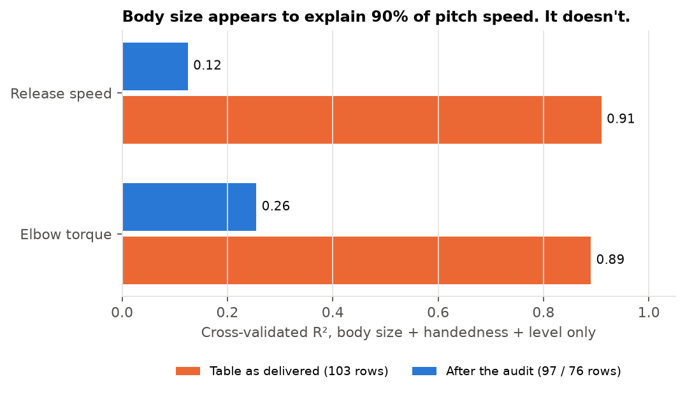
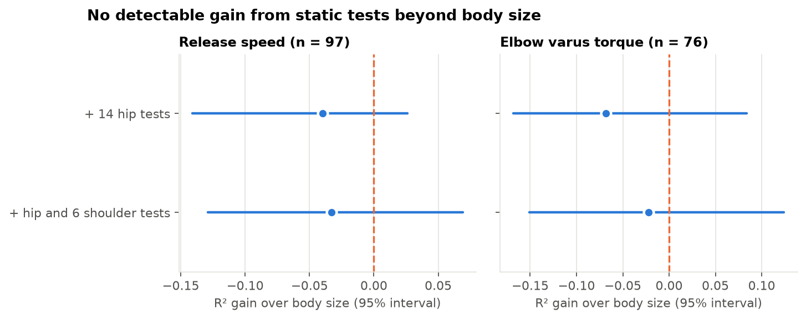
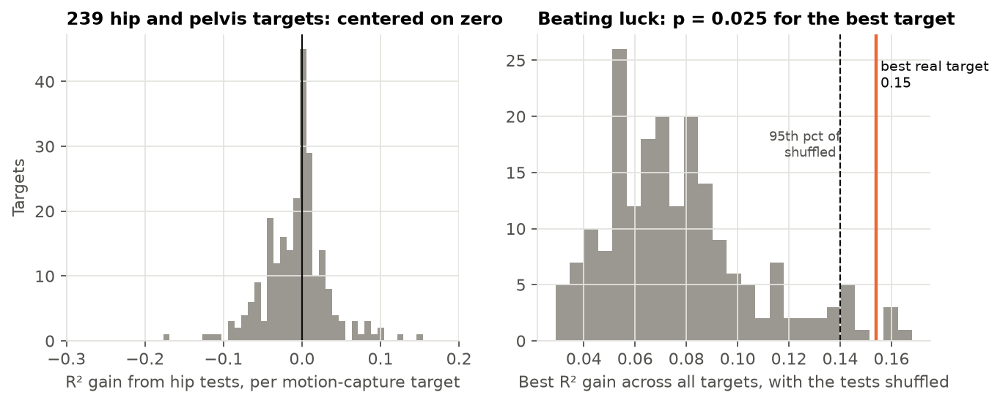

Do static hip and shoulder tests predict how a pitcher throws?
A data audit and out-of-sample test on 103 professional pitchers: VALD strength and mobility tests against release speed, elbow load and hip motion.
In 30 seconds. The tests show no detectable gain over body size: for pitchers the model hadn't seen, 25 static tests gained nothing measurable for release speed or elbow torque (large effects are ruled out, small ones are not), and across 239 hip and pelvis motion measurements only one beat a shuffled-label check, narrowly. The more useful result is the audit. The lab table had 6 corrupt rows and 21 placeholder-mass rows, and with them left in, body size alone "explains" 0.91 of release speed. Cleaned, it explains 0.12.
Data
103 pitchers (88 minor league, 15 major league) from the PLNU Pitching Lab: 28 static VALD hip and shoulder tests, body size, one session of fastballs with markerless motion capture (release speed, peak elbow varus torque, about 240 hip and pelvis measurements). The data are private; code and aggregate results only are shared.
Approach
- Audit first: rules for corrupt rows, placeholder mass, mostly-missing tests and an exploding asymmetry value, each counted.
- Unseen pitchers: 10-fold CV × 20 repeats, ridge; imputation, winsorizing, scaling and penalty fit inside each training fold.
- Many targets, honest test: the best of 239 hip targets is judged against the best of the same targets under shuffled tests.
- Synthetic stand-in with planted problems and planted truth drives 11 tests and CI.
Findings
- The raw table fools a model: height, mass, handedness and level reach R² 0.91 (speed) and 0.89 (torque) by recognizing broken rows. After the audit: 0.12 and 0.26.
- No detectable gain from static tests for release speed (R² 0.125 → 0.085 with hip tests, gain CI -0.14 to +0.03) or elbow torque (0.255 → 0.187, CI -0.17 to +0.08).
- Elbow load follows body mass, not mobility.
- Power is limited: a simulation shows a real gain of 0.20 R² would be detected only 44% (speed) and 22% (torque) of the time. Large effects are ruled out; small ones are not.
- Hip motion: median gain from hip tests is about zero. The best target gains 0.15 R² against 0.14 for the shuffled 95th percentile (p = 0.025): borderline, one of 239, a hypothesis only.

Cross-validated R² for body size + handedness + level, on the table as delivered and after the audit.
Model results (held-out pitchers, 10-fold CV × 20)
| Model | Release speed R² (n = 97) | Elbow torque R² (n = 76) |
|---|
| Guess the mean | 0 | 0 |
| Body size, handedness, level | 0.125 | 0.255 |
| + 14 hip tests | 0.085 | 0.187 |
| + hip and 6 shoulder tests | 0.092 | 0.233 |

R² gain over body size with 95% interval from a pitcher bootstrap. Zero is inside every interval.

Left: gain from hip tests for each of 239 targets. Right: the best gain when the tests are shuffled, with the real best target in orange.
Limitations
- 97 pitchers, one session each; 25 correlated tests. Effects under about 0.2 R² would usually be missed (see the power simulation).
- Only 76 pitchers have a usable elbow torque; its absolute scale comes from the capture system and was not independently validated.
- All sessions are markerless; differences between capture sessions are not modeled.